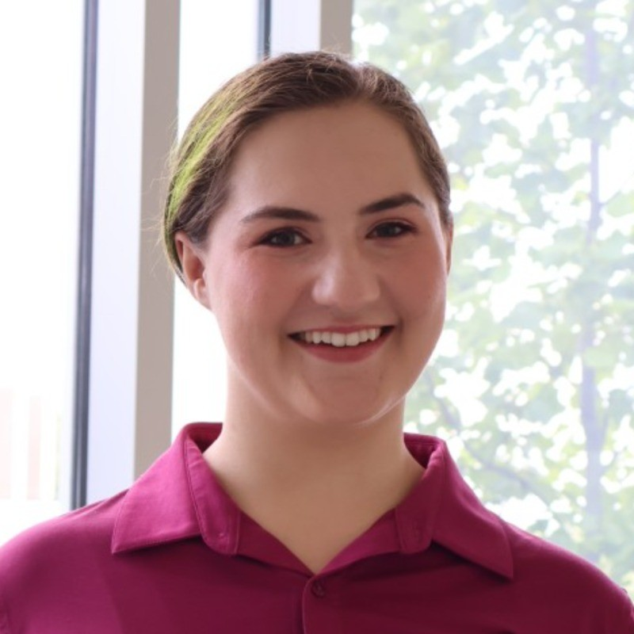
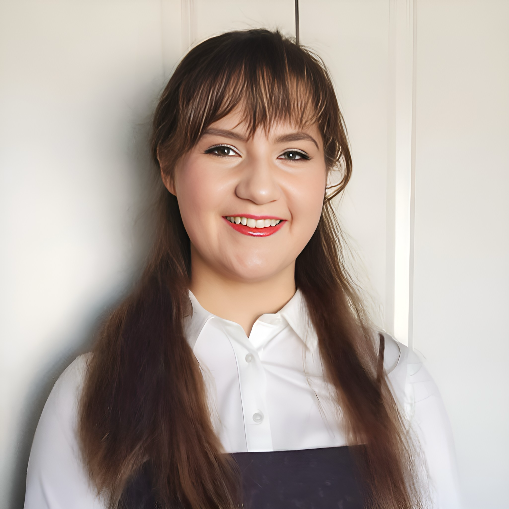
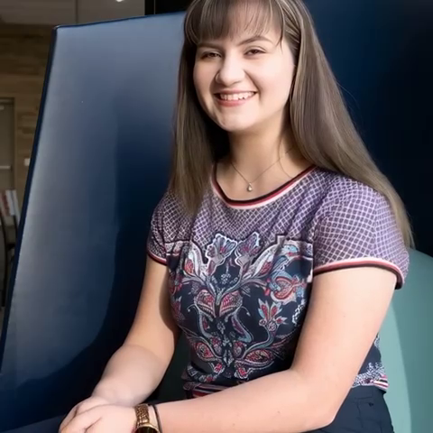
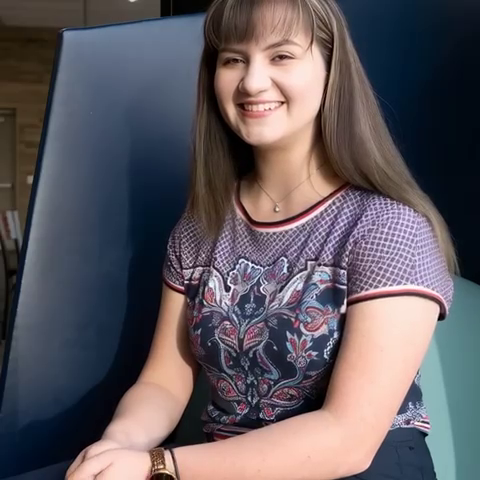
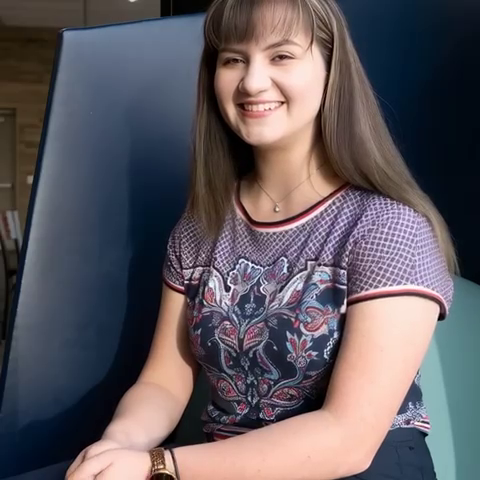

Gallery
  

In my five-year degree in Nanotechnology Engineering at the University of Waterloo, I found opportunities to participate in many extra-curricular activities and complete projects in lab settings. In first year, Quantum Valley Investments chose my partner and I as two-time finalists in the Problem Pitch competition for our research into limitations in expansion of lab-on-a-chip technology. In fourth year, my capstone project team successfully created a microfluidic contact lens to collect tear fluid samples in order to promote more comfortable and less contaminated collection. We successfully gained funding from the Engineer of the Future fund and won the Baylis Medical Capstone award. We completed in the Waterloo Engineering competition winning Sanford Flemming foundation Innovative design award. We continued to the Ontario Engineering Competition at McMaster University winning second place in innovative design and the Canadian Engineering Competition at Dalhousie University also winning second place in innovative design. At the 2025 Nanotechnology Capstone Symposium we won first place. Having said this, above all I am a hoe at heart ;)
